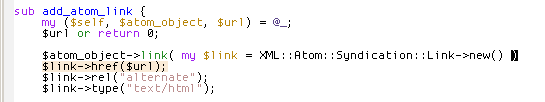
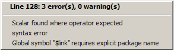
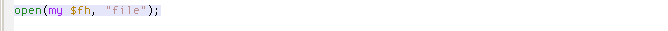
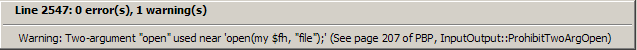

D'oh, I clumsily deleted the semicolon. But a second after saving... hey, something is wrong here!
The color is low key enough to not be in my face while I fix the problem.

C-o s s on the error line displays the compilation error.

Perl::Critic violations (enable with utmost care, not all Perl Best Practices are that great) are displayed as warnings.

Although this one is very sensible.